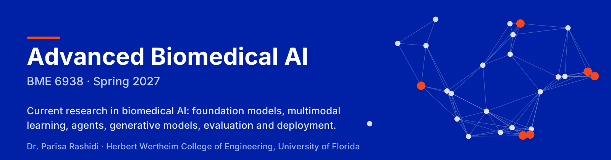
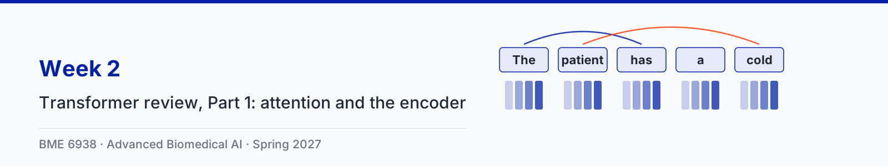
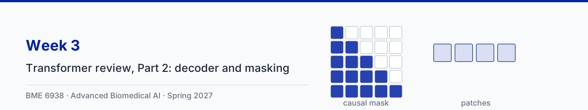
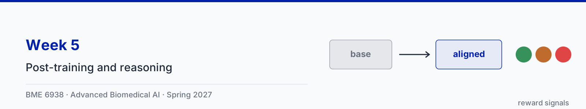
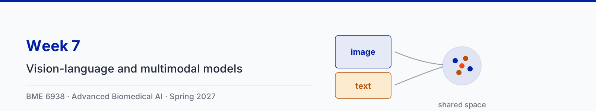
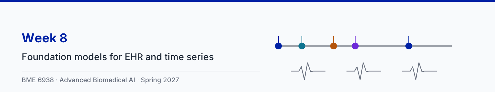
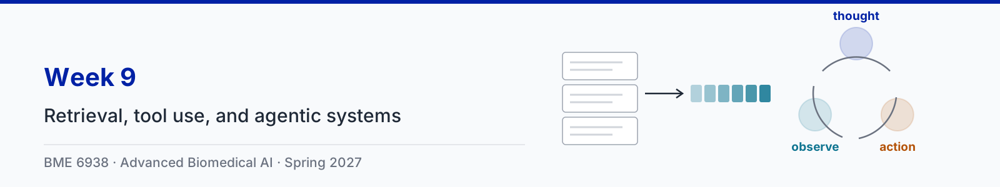

Advanced Biomedical AI (BME 6938)
University of Florida, Spring 2027. A graduate course on current research in biomedical AI: modern LLM architectures, post-training and reasoning, self-supervised learning, foundation models for imaging, EHR and physiological time series, multimodal models, retrieval and agentic systems, generative models, clinical evaluation and deployment.
Every week below has its animation clips, playable here with captions, alongside the slides and a reference notebook. The course repository has the sources for all of it.
Weeks







